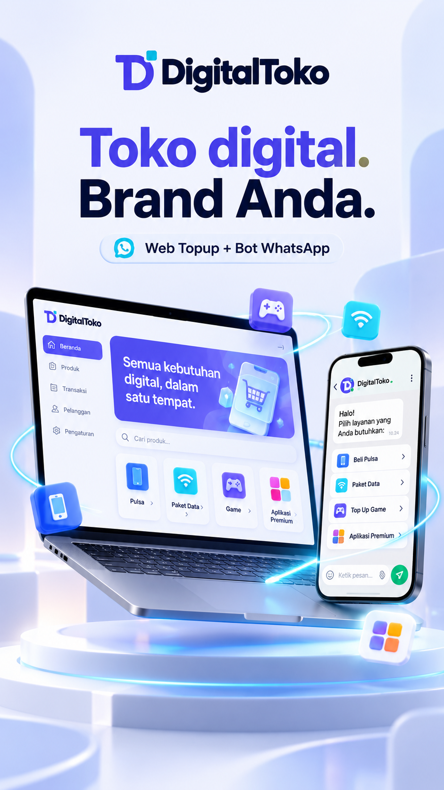
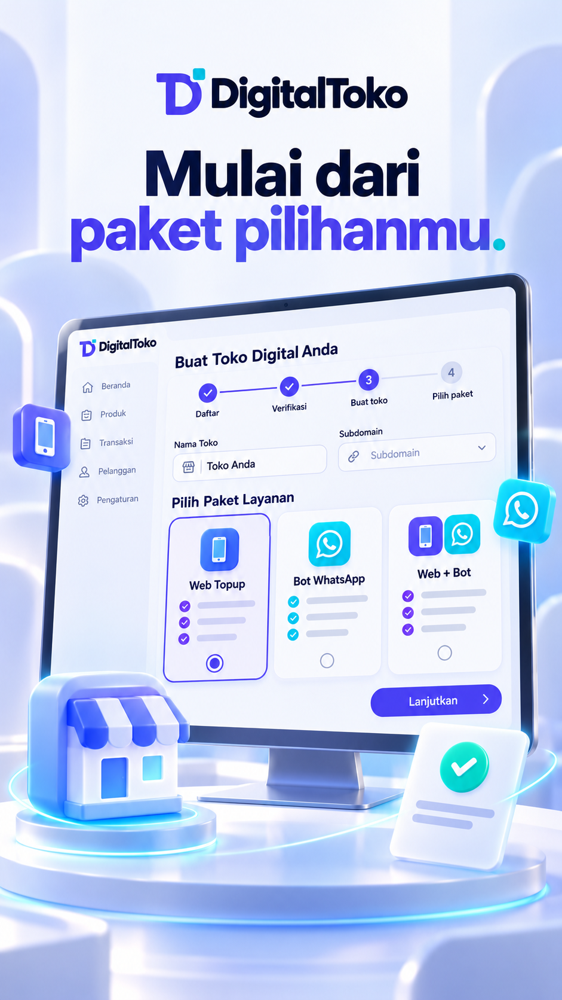
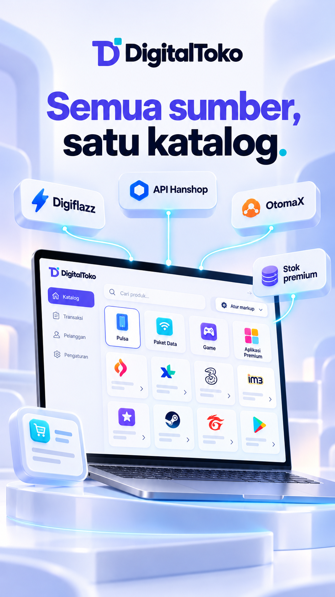
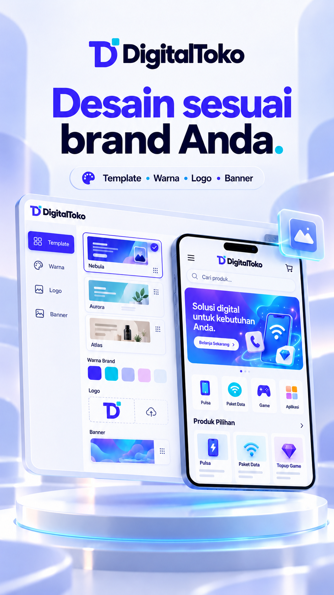
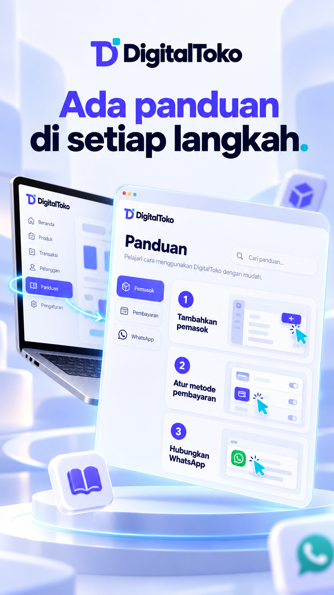
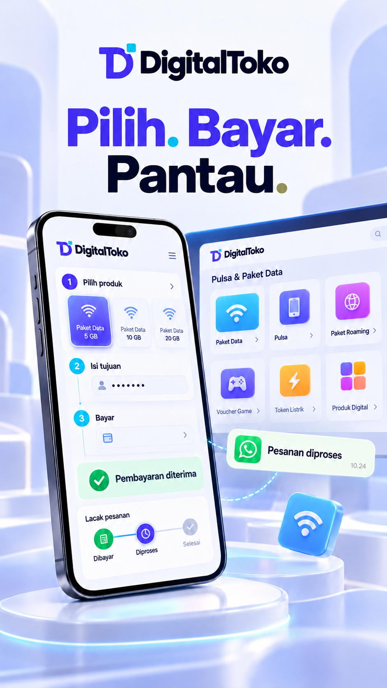
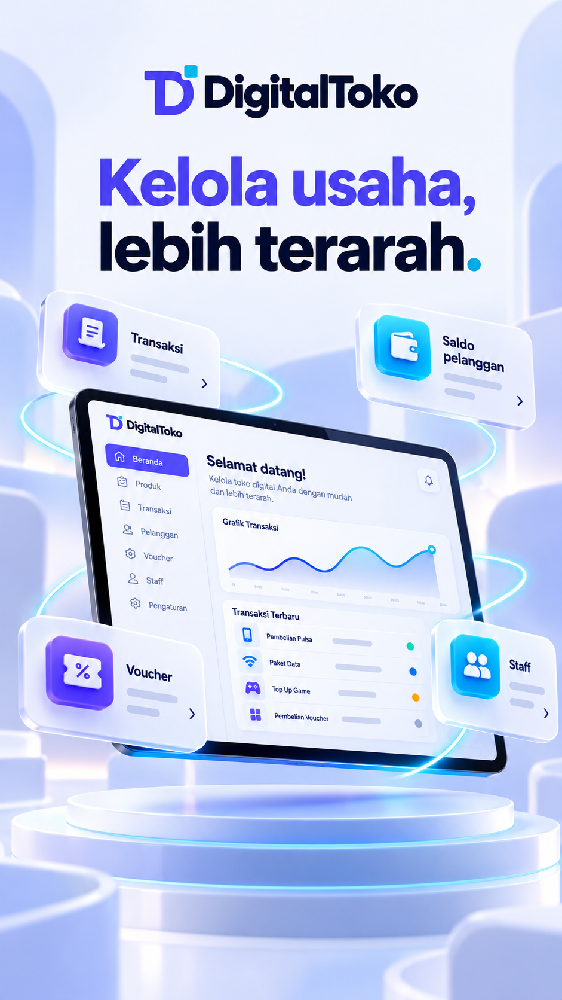
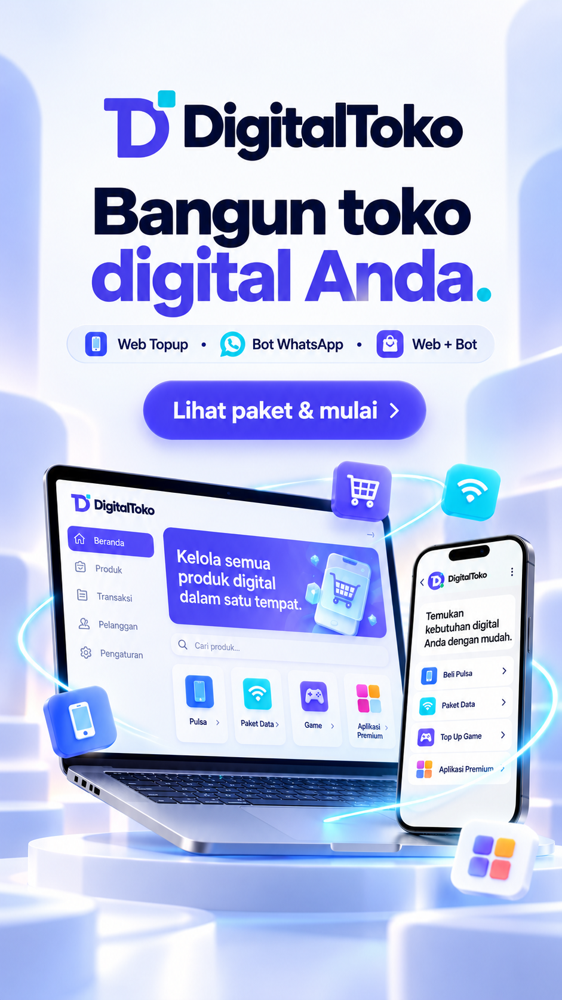

01 / Pembuka00–06 dtk · 6sPunya toko produk digital dengan nama sendiri? Mulai bersama Digital Toko.Prompt Flow 01 ↗
02 / Daftar & pilih paket06–14 dtk · 8sDaftar, lengkapi verifikasi, buat toko, lalu pilih paket Web, Bot WhatsApp, atau keduanya. Bayar sesuai durasi pilihanmu.Prompt Flow 02 ↗
03 / Hubungkan pemasok14–22 dtk · 8sHubungkan Digiflazz, Hanshop, atau pemasok OtomaX. Impor katalog, atur markup harga, dan kelola stok aplikasi premium.Prompt Flow 03 ↗
04 / Custom tampilan toko22–30 dtk · 8sPilih template, ganti warna, logo, dan banner. Susun beranda sesuai brand, lalu siapkan domain toko milikmu.Prompt Flow 04 ↗
05 / Panduan bergambar30–38 dtk · 8sButuh bantuan? Ikuti panduan bergambar, dari koneksi pemasok, pembayaran, hingga pengaturan toko. Langkahnya bisa kamu ikuti dari panel.Prompt Flow 05 ↗
06 / Pelanggan memesan38–46 dtk · 8sToko aktif, pelanggan pilih produk, isi tujuan, lalu bayar. Pesanan diproses dan statusnya dipantau lewat web atau WhatsApp.Prompt Flow 06 ↗
07 / Operasional lebih mudah46–52 dtk · 6sPantau transaksi, kelola saldo pelanggan, buat voucher, dan bagi tugas bersama staff dalam satu panel.Prompt Flow 07 ↗
08 / Ajakan mulai52–60 dtk · 8sSiap membangun toko digital dengan brand sendiri? Pilih paketmu, siapkan tokomu, dan mulai bersama Digital Toko.Prompt Flow 08 ↗